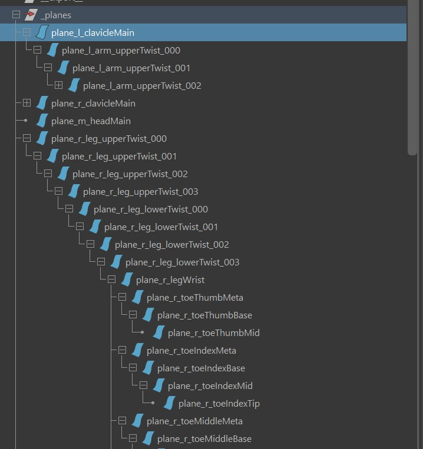
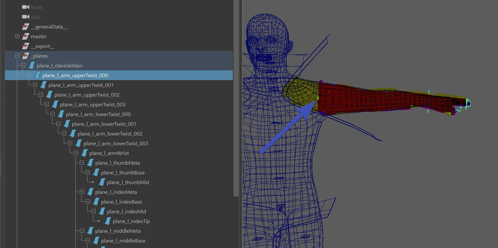
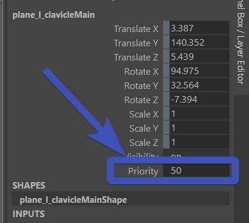
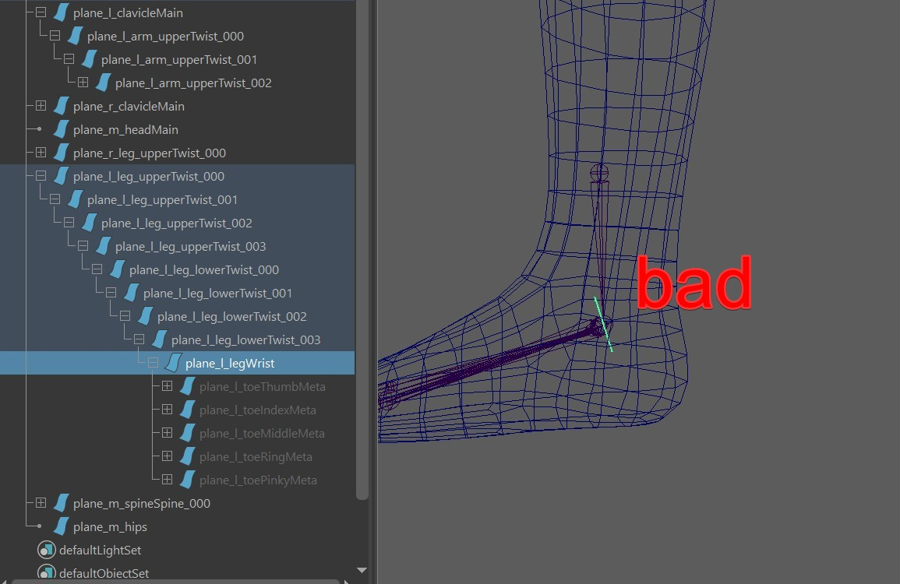

Plane Cutter
Plane Cutter is a tool that can get you a quick first pass SkinCluster or Proxy Cut Geometries.
The way it works is that you define a set of nurbs planes, and he'll use those to assign the regions.
Video
While this document explains it all - if you find it simpler to follow in a video, click here. The video is still up to date for the most part, except the bug that is mentioned in there where it creates planes for dynamic joints is fixed.
If you are curious what people say on LinkedIn about this: LinkedIn Post
How does it work?
In the following image you can see how the planes are
ordered in a hierarchy:

While each plane represents a joint, the hierarchy is not the same as the joint hierarchy. One of the differences you see is that plane_l_clavicleMain
and plane_m_head are at the top of the hierarchy. This means he will cut the clavicle and head first.
But another important point is also that he's traversing through all the planes recursively, which means that after every plane he uses to cut,
he will go through all the child planes one by one, and when all the child planes are done, he'll go back and do the sibling of the parent etc..
So let's start with plane_l_clavicle. He'll just cut the part from the front side of that plane (picture right side, painted in red). And since
it's the first plane, he'll conisider the whole mesh (yellow):

Let's look at plane_l_arm_upperTwist_000 next. The plane is a bit small, but in the following picture you'll see the blue arrow
pointing to it. I've marked in yellow the part that this plane is considering. Which is the part that its parent
(plane_l_clavicleMain) was cutting out already. And in red I've marked the part that this plane is actually cutting out:

Now it gets interesting when we get to the fingers. When we are cutting the plane_l_thumbMeta, we are only
considering the part that I've marked in yellow, again because that is what the parent plane before (plane_l_armWrist)
was cutting out. And the part that I'ved marked in dark red is what this plane
is actually cutting out:
After the clavicles (and the children such as arms, and wrist, and fingers...), he'll do the head.
And guess what - for cutting the head, again he'll only
consider everything that was NOT cut yet by the previous planes, which is what I marked in yellow in the following image.
And again red is that part that this plane is cutting:
And the upper leg comes after the head:
The shape of the last plane in the top hierarchy is irrelevant, but the plane is still important. Because at the time it
gets to this plane, he'll assign all the remaining weights to this joint:
Order of the Siblings
So far we discussed that the order is so it goes to the children first. But after the children and between the siblings, which ones will
he do first?
This is determined by the priority attribute, each plane has it:

Basically from all the siblings, the ones that have higher priority will be called first. And if a plane doesn't have siblings,
this attribute is ignored.
Plane Influence goes into Infinity
You might have noticed already that some of the planes are very small. And that's ok in most cases, he'll sort of creates a tangent from the edge of the planes, so their influence go into the infinity. In the following image you can see what can happen if the plane is smaller. I drew a grey line to where the influence goes, and there you can see he's grabbing some of the vertices that shouldn't be affected.
Note
This tangent/infinity is by far the most common cause for troubles. Whenever you have things not working as expected, first check the tangents of all the planes.
Create the Planes
Now that we know how the planes hierarchy works, let's look at how to create them for a Biped. For quadrupeds it would be similar.
1. Create
After you built the character, in the Segments tab, under Create, click Create for All Joints:
This creates simple planes, and takes care of the hierarchy.
2. Shape the Clavicle
The clavice plane is one of the few that you have to sculpt. Sculpt it so it cuts off the clavicle from the body:
3. Inspect the fingers
In this case the fingers already work well, but sometimes you might have to adjust the cvs a bit, especially when in the
model the fingers are very close to each others.

Note
Those planes between the fingers are created based on the finger joint orientations. If you see that the planes are aligned a bit strangely, this might be a good time to go back into the blueprints.
4. Shape the Upper Legs
5. Take care of the ankle
By default, the ankle plane (plane_l_legWrist) is oriented based on the joints. But that's not a good thing. In the following image, this plane
would cut the heel from the foot:

So we need to rotate the CVs, so the plane cuts the foot as a whole:

6. Check the Toes

7. Mirror all the planes
8. Try it out
Then move around the ctrls, or apply some ROM. It's probably not perfect at the first time, so just adjust the planes, mirror, and
click the Selected Polys all Planes button again. Repeat that cycle until you find it's good enough for a first pass.
Don't overdo it!
Keep in mind this tool is just here to give you a first pass. While there's no harm in getting the plane setup as good as possible, at some point it might be more efficient to proceed to the other skinning tools for finetuning the weights.
Getting better Default Planes
When you click the button Create for All Joints, he'll just create the planes based on what he sees in the rig. There's a way to define a little bit how this button should create planes. For example you can specify a few limbs to not have planes. Or you can specify a few limbs to create their planes be in the top hierarchy.
In the puppet tool all limbs have this Segments Priority attribute:
It's a multifunctional attribute, see in the following table how to set it:
| Segments Priority | |
|---|---|
| -1 | don't create planes for this limb |
| 0 | default, just put those planes under the parent limb in the puppet tool |
| > 0 | put it at the top of the hierarchy and assign this value as the priority |
Export Planes
The export tool just exports the _planes group. No need to select anything for it:

Proxy Cuts
You can also use those planes to create Proxy Cut geometry:
When you've got the planes in the scene, just use the GeoCut tool:
After that you may have to use the Proxy tool to create proper meshes from the geos the previous tool cut:
And export those using the Export -> MayaImport tool.
But then setting those up in the rig is a python thing at this point. But you can copy/paste this python script
as a start:
@builderTools.addToBuild(iOrder=4)
def proxys():
import kangarooTabTools.segments as segments
segments.parentProxyMeshes()
sMaster = utils.getMasterName()
cmds.parent('_proxys', sMaster)
sProxysAttr = nodes.addAttr(sMaster, ln='proxys', at='enum', en='OFF:ON:BOTH', k=True)
nodes.createConditionNode(sProxysAttr, '!=', 0, True, False, sTarget='_proxys.v')
sModelChildren = cmds.listRelatives('model', c=True, typ='transform') or []
nodes.createConditionNode(sProxysAttr, '!=', 1, True, False, sTarget=['%s.v' % sT for sT in sModelChildren])
cmds.setAttr('_proxys.overrideEnabled', 1)
cmds.setAttr('_proxys.overrideDisplayType', 2)
Reset Planes
Resetting the planes is setting them to the point that they would be if you clicked the Create for All Joints button.
This is especially useful for the fingers, where those planes get funky quickly as you adjust blueprints.
Rebuild
This is for adding more or less resolution to the planes. It's basically just calling Surfaces -> Rebuild